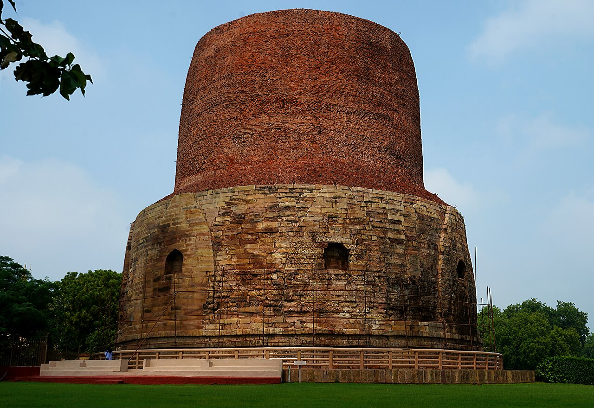
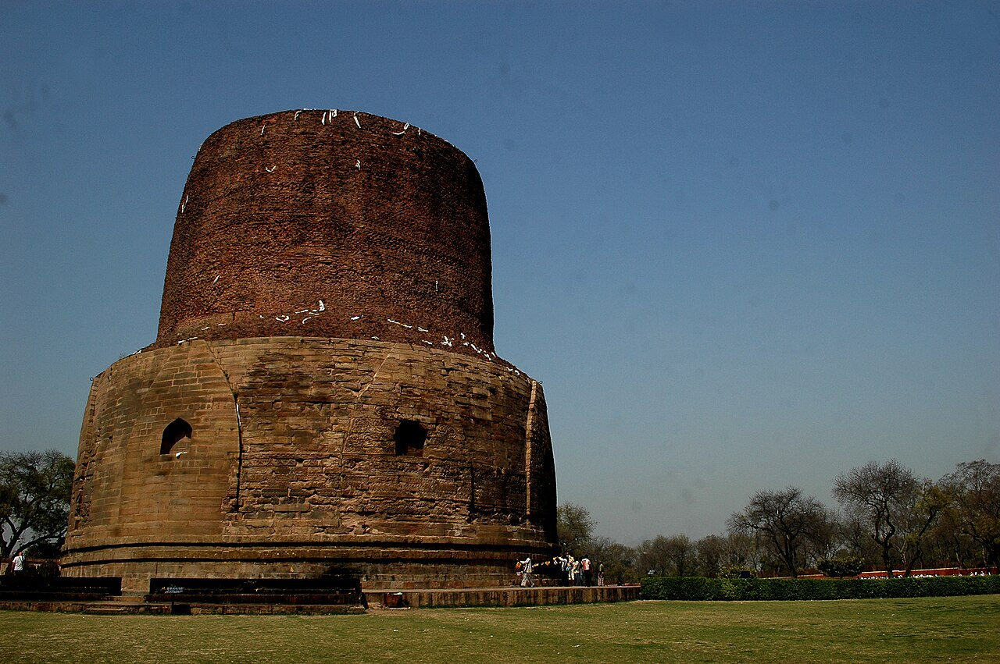

Ten kilometers northeast of the frenetic riverfront ghats of Varanasi lies Sarnath, one of the four most sacred pilgrimage destinations in the Buddhist world. Known in classical antiquity as Isipatana (the Deer Park), this serene sanctuary of manicured lawns, brick monastic ruins, and towering ancient stupas is the historic location where Siddhartha Gautama, having attained supreme enlightenment beneath the Bodhi tree at Bodh Gaya, delivered his maiden discourse.
Turning the Wheel of the Dharma (Dharmachakrapravartana)
In approximately 528 BCE, the Buddha walked from Bodh Gaya to the Deer Park at Sarnath to seek out the five ascetics (pañcavaggiya) who had previously abandoned him during his years of severe self-mortification. Here, he expounded the Dhammacakkappavattana Sutta—the discourse "Setting in Motion the Wheel of the Law."
In this foundational sermon, the Buddha articulated the Middle Path (avoiding both extreme hedonism and punishing asceticism), the Four Noble Truths diagnosing the nature and cessation of suffering (dukkha), and the Noble Eightfold Path. The five ascetics became his first enlightened disciples, giving birth to the Sangha—the monastic community of Buddhism. For over fifteen centuries thereafter, Sarnath flourished as a world-renowned center of Buddhist scholarship, monasticism, and art.
Key Historical Facts
- Historic Event: Buddha's First Sermon (c. 528 BCE); Founding of the Buddhist Sangha
- Principal Monument: Dhamek Stupa, a massive cylindrical stupa standing 43.6 meters tall and 28 meters in diameter
- Mauryan Patronage: Emperor Ashoka the Great (3rd century BCE) erected the Lion Capital and Dharmarajika Stupa
- National Emblem: The Sarnath Lion Capital of Ashoka was adopted in 1950 as the official National Emblem of the Republic of India
- Museum: Sarnath Archaeological Museum, India’s oldest site museum (established 1910)
The Colossal Dhamek Stupa & Gupta Stonework
The skyline of Sarnath is dominated by the monumental Dhamek Stupa. Originally founded by the Mauryan Emperor Ashoka in 249 BCE to enshrine relics of the Buddha, the stupa was enlarged to its present colossal proportions during the Gupta dynasty around 500 CE. Constructed of solid brick with its lower section encased in finely carved Chunar sandstone, the structure rises over forty-three meters above the excavated monastic compound.
The lower sandstone casing is celebrated as an apex achievement of classic Gupta decorative sculpture. Intricate bas-relief friezes display delicate geometric chevrons, blooming lotus blossoms, swirling foliage, and figures of swarming birds. Eight projecting niches once sheltered life-size gilded statues of the Buddha depicting the gestures of teaching (dharmachakra pravartana mudra) and meditation.


The Lion Capital & The Archaeological Museum
Immediately across from the archaeological park stands the Sarnath Archaeological Museum, constructed in 1910 under the guidance of Sir John Marshall. The museum houses some of the most celebrated masterworks of ancient Indian sculptural art, preeminently the third-century BCE Lion Capital of Ashoka.
Chiseled from a single block of polished Chunar sandstone with a lustrous Mauryan polish, the capital features four back-to-back Asiatic lions standing upon a circular abacus carved with a bull, horse, lion, and elephant separated by 24-spoke wheels (Ashoka Chakras). In 1950, this magnificent capital was chosen as the official National Emblem of India, while the wheel at its center was enshrined on the national flag. The museum also displays the iconic fifth-century Gupta masterpiece of the seated Preaching Buddha, renowned for its transcendent spiritual calm and sublime simplicity.
Visitor Information & Guidelines
- Archaeological Park Timings
- Open daily from sunrise to sunset (06:00 to 18:00). Modest entrance fee; tickets can be booked online via the ASI portal or at the on-site QR counter.
- Museum Timings
- Open 09:00 to 17:00. Closed on Fridays. Separate entrance ticket required.
- Sound & Light Show
- An evocative Hindi and English sound-and-light show recounting the life of the Buddha is staged beside Dhamek Stupa every evening after sunset.
- How to Reach
- Located 10 km from central Varanasi. Readily accessible via taxi, auto-rickshaw, or city bus in roughly 30 to 45 minutes.
International Monasteries: Allow additional time to visit modern Buddhist monasteries established by communities from Sri Lanka, Thailand, Japan, Tibet, and Myanmar scattered around the perimeter of the ancient archaeological reserve.